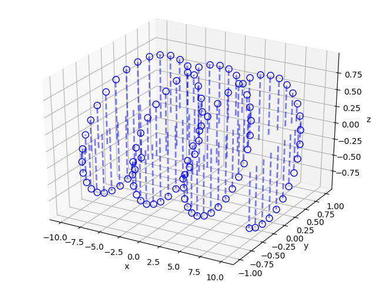

Gráfica de curvas en 3D con Python
Posted on dom 07 enero 2018 in Tutorial de Python • 1 min read
El artículo de hoy se explicará como crear una gráfica 3D con Python.
Este artículo se basa en el artículo en inglés 3D Stem plot.
Para este caso se tiene dos archivos en un repositorio en github, uno python y otro un notebook de jupyter.
Se generará una variable x que define el eje del tiempo de dos gráficas (seno y coseno) para luego graficarlo en forma de gráfica 3D.
A continuación el código:
#!/usr/bin/env python3
# # Se importan las librerías necesarias
from numpy import linspace, sin, cos
from pylab import figure, show
from mpl_toolkits.mplot3d import Axes3D
# # generando algunos datos
x = linspace(-10,10,100);
y = sin(x);
z = cos(x);
# # Se crea la instancia de la figura y se asocia a la figura 3D
fig = figure()
ax = Axes3D(fig)
# # graficando los datos
for i in range(len(x)):
ax.plot([x[i], x[i]], [y[i], y[i]], [0, z[i]],
'--', linewidth=2, color='b', alpha=.5)
# # graficando un circulo en el tope de cada curva
# plotting a circle on the top of each stem
ax.plot(x, y, z, 'o', markersize=8,
markerfacecolor='none', color='b',label='ib')
ax.set_xlabel('x')
ax.set_ylabel('y')
ax.set_zlabel('z')
show()
Al ejecutar el script se tiene la siguiente gráfica.

¡Haz tu donativo! Si te gustó el artículo puedes realizar un donativo con Bitcoin (BTC) usando la billetera digital de tu preferencia a la siguiente dirección: 17MtNybhdkA9GV3UNS6BTwPcuhjXoPrSzV
O Escaneando el código QR desde la billetera: